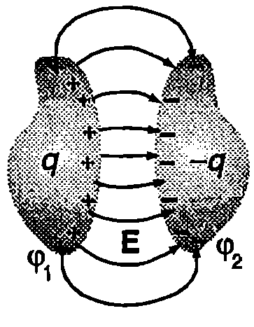
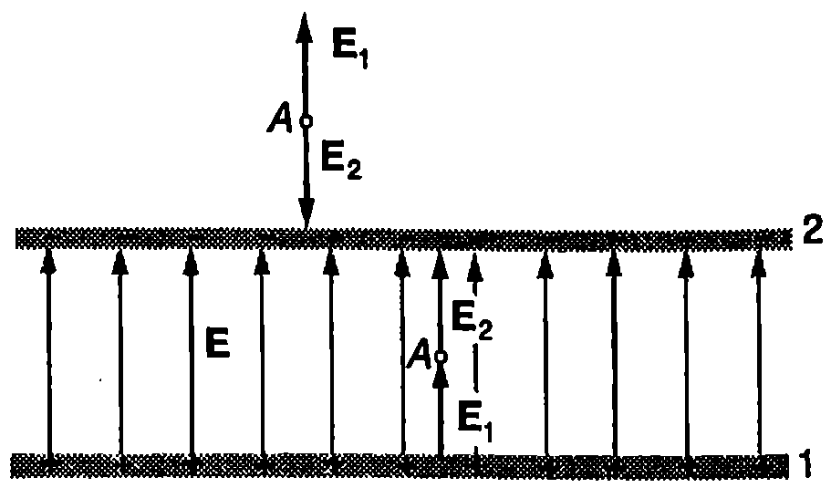
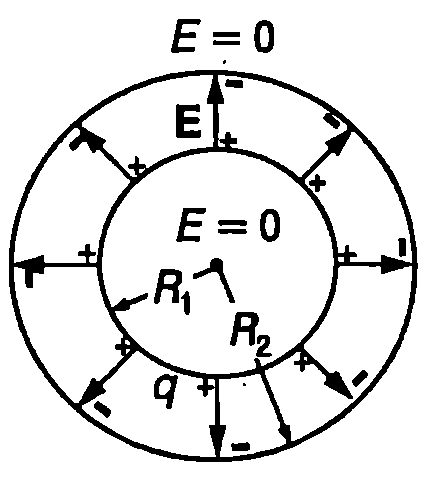
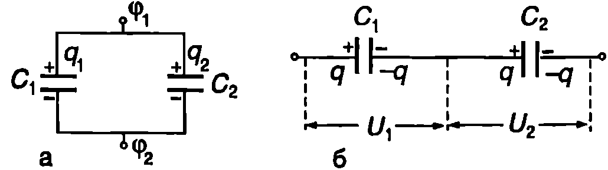
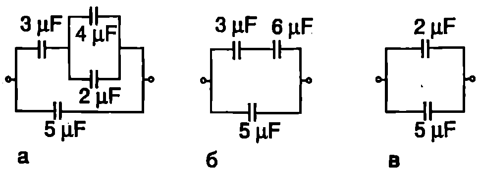
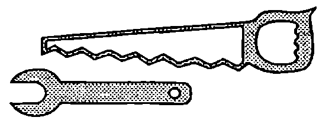
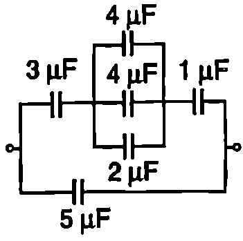
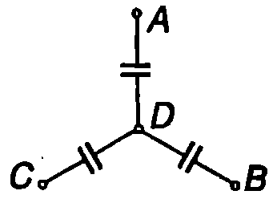

Капацитет на проводник
Да разгледаме проводник, който е разположен далече от други заредени или проводящи тела, така че техните електрични полета да не му влияят. Допълнителен заряд се разпределя само по повърхността на проводника, така че електричното поле във всяка точка от обема на проводника да е нула, а повърхността му да е еквипотенциална. Доказва се, че това разпределение е единствено и не зависи от големината и от знака на заряда . Например, ако отношението на повърхнинната плътност на зарядите в две произволно взети точки от повърхността на проводника има определена стойност при дадена големина на заряда , тази стойност няма да се измени, ако се промени общият заряд . Оттук следва, че потенциалът на проводника е правопропорционален на заряда му , т.е.
Коефициентът на пропорционалност зависи от формата и от размерите на проводника и не зависи от големината на заряда. Нарича се капацитет на проводника. Единицата за капацитет е фарад (F). Съгласно с формула \eqref{eq:48.1} капацитетът на проводник е един фарад (1 F), ако при заряд C проводникът има потенциал V: .
Пример 48.1
Пресметнете капацитета на сферичен проводник с радиус m. \end{psexample}
Решение
Ако придадем на сферичния проводник заряд , той се разпределя равномерно по неговата повърхност: всички заряди се намират на еднакво разстояние от центъра на сферата. Следователно потенциалът в точка е: Същият потенциал има и еквипотенциалната повърхност на проводника. (Ще припомним, че всички точки от обема и повърхността на проводниците имат еднакъв потенциал.) Капацитетът на сферичния проводник е:
Полученият резултат показва, че фарадът е много голяма единица. Лесно се пресмята, че капацитет 1 F има сферичен проводник с радиус m, т.е. около 1500 пъти по-голям от радиуса на Земята. Затова в практиката по-често се използват дробните единици: милифарад (1 mF = F), микрофарад ( F), нанофарад (1 nF = F) и пикофарад (1 pF = F).
Формула \eqref{eq:48.2} е за частния случай на сферичен проводник, но тя илюстрира и един по-общ резултат: капацитетът на отделен проводник, намиращ се във вакуум, може да се представи като произведение от електричната константа и някаква характерна за проводника дължина. Следователно в SI размерността на електричната константа е фарад на метър: .
Капацитет на кондензатор
Отделните проводници имат малък капацитет, поради което не могат да се използват за натрупване и съхраняване на електрични заряди. Ако към проводник със заряд се приближи незареден проводник, в резултат на електростатичната индукция потенциалът на заредения проводник намалява. Върху незаредения проводник се индуцират заряди: тези, които са разноименни на заряда , се разполагат по-близо до заредения проводник, а едноименните — по-далече. Затова разноименните индуцирани заряди оказват по-голямо влияние на потенциала на заредения проводник, като го намаляват. Следователно капацитетът на проводника нараства и върху него може да се натрупа по-голямо количество заряд. Ефектът е още по-силен, когато двата проводника са заредени с противоположни по знак заряди.
Система от два проводника, които са заредени с еднакви по големина и противоположни по знак електрични заряди, се нарича кондензатор (Фиг. \ref{fig:48.1}). Основната характеристика на кондензатора е неговият капацитет , който се дефинира чрез равенството:

`Фиг. 48.1`
където и са потенциалите на двата проводника, а е зарядът на кондензатора. Ще обърнем внимание, че заряд на кондензатора се нарича големината на заряда на единия от проводниците. Тъй като по определение двата проводника имат еднакви по големина и противоположни по знак заряди, техният общ заряд е нула. Потенциалната разлика се нарича електрично напрежение между съответните точки на полето (в случая между еквипотенциалните повърхности на двата проводника).
Капацитетът на кондензатор, също както капацитетът на отделен проводник, се измерва във фаради. Той зависи от формата, размерите и взаимното положение на двата проводника, образуващи кондензатора.
Кондензаторите се използват в практиката за натрупване на електричен заряд и на електрична енергия (вж. \ref{sec:49}). Двата проводника, от които е съставен кондензаторът, се наричат електроди. За да не оказват външните полета влияние на капацитета на кондензаторите, на електродите се придава подходяща форма и те се разполагат един спрямо друг така, че електричното поле, което създават техните заряди, да е съсредоточено в пространството между електродите, а извън кондензатора полето да е нула. В най-простите случаи, когато лесно може да се пресметне капацитетът, електродите са: две успоредни метални пластини (равнини), разположени на малко разстояние една от друга (плосък кондензатор), две концентрични метални сфери (сферичен кондензатор) или два коаксиални метални цилиндъра (цилиндричен кондензатор).
Пример 48.2
Да се пресметне капацитетът на плосък кондензатор, съставен от две успоредни проводящи пластинки, всяка с площ , разположени във вакуум (или във въздух) много близо една до друга. Разстоянието между пластинките е много по-малко от техния характерен линеен размер (например от радиуса им, ако пластинките са кръгли, или от дължината на диагонала им, ако пластинките са правоъгълни). \end{psexample}

`Фиг. 48.2`
Решение
Нека едната пластинка е заредена със заряд , а другата със заряд . Тъй като пластинките са големи, а разстоянието между тях е малко, няма да отчитаме ефектите в краищата на кондензатора и ще разглеждаме всеки един от двата електрода като равномерно заредена безкрайна равнина с повърхнинна плътност на заряда и . Такава равнина създава еднородно електрично поле с интензитет (вж. пример 45.2). Извън кондензатора двата електрода създават полета, чиито интензитети имат противоположни посоки, поради което резултантното поле е нула (Фиг. \ref{fig:48.2}). Вътре в кондензатора интензитетите на двете полета имат еднаква посока и съгласно с принципа на суперпозицията интензитетът на резултантното поле е:
Полето вътре в плоския кондензатор е еднородно — силовите му линии са успоредни прави с еднаква гъстота, които започват от положителния електрод и завършват в отрицателния електрод (Фиг. \ref{fig:48.2}). Напрежението между двата електрода е равно на потенциалната разлика между две точки на еднородно поле, лежащи върху една и съща силова линия на разстояние една от друга: Капацитетът на плоския кондензатор е:
Формула \eqref{eq:48.5} показва, че капацитетът на плосък кондензатор нараства, ако се намали разстоянието между електродите или се увеличи тяхната площ.
Пример 48.3
Пресметнете капацитета на сферичен кондензатор, съставен от две концентрични сфери с радиуси и (Фиг. \ref{fig:48.3}). \end{psexample}

`Фиг. 48.3`
Решение
Нека вътрешната сфера е заредена със заряд , а външната със заряд . Поради сферичната симетрия зарядите се разпределят равномерно върху външната повърхност на вътрешната сфера и върху вътрешната повърхност на външната сфера. Електрично поле има само в пространството между двете сфери. Тъй като извън кондензатора полето е нула, всички точки от външното пространство имат същия потенциал, както външния сферичен проводник на кондензатора. Ще приемем този потенциал за нула: . Общият център на двете сфери има същия потенциал , както еквипотенциалната повърхност на вътрешната сфера. Той е алгебрична сума от потенциала на зарядите , които се намират на разстояние от центъра, и на зарядите , разположени върху външната сфера на разстояние от центъра: Капацитетът на сферичния кондензатор е:
Ще разгледаме два характерни гранични случая:
-
Увеличаваме радиуса на външната сфера. Когато е в сила неравенството , умалителят в знаменателя на уравнение \eqref{eq:48.6} може да се пренебрегне. След съкращаване на се получава формулата за капацитет на отделен сферичен проводник (вж. пример 48.1). Действително, в този случай външната сфера е толкова отдалечена, че не оказва влияние на капацитета на вътрешния сферичен проводник.
-
Разстоянието между двете сфери е много малко и е в сила неравенството . Тогава двете сфери имат приблизително еднаква повърхност . След заместване на и в уравнение \eqref{eq:48.6}, за капацитета се получава — формулата за капацитет на плосък кондензатор. В този граничен случай, поради малкото разстояние между сферите и приблизително еднаквата им повърхност, електричното поле между тях е почти еднородно и кондензаторът може да се приеме за плосък.
**Свързване на кондензатори **
В електрическите вериги кондензаторите се отбелязват със символа -||-. При свързване на два или повече кондензатора се получава кондензаторна батерия. Два кондензатора могат да се свържат успоредно или последователно. В общия случай една кондензаторна батерия може да съдържа различни комбинации от успоредно и последователно свързани кондензатори.
На Фиг. \ref{fig:48.4}а е показана схематично батерия, съставена от два успоредно свързани кондензатора с капацитети и . Горните електроди на кондензаторите са свързани с проводник, поради което имат еднакъв потенциал . Същото се отнася за долните електроди, чийто потенциал ще означим с . Следователно при успоредно свързване напрежението върху заредените кондензатори е еднакво: . Зарядът на единия кондензатор е , а на другия е . Общият заряд на кондензаторната батерия е , а нейният капацитет е:
Следователно кондензаторна батерия, съставена от два успоредно свързани кондензатора, е еквивалентна на един единствен кондензатор с капацитет, равен на сумата от капацитетите на двата кондензатора. Този резултат се обобщава за батерия от успоредно свързани кондензатора с капацитети :
На Фиг. \ref{fig:48.4}б са показани два последователно свързани кондензатора. Ако на левия електрод на първия кондензатор се придаде заряд , в резултат на електростатичната индукция върху свързаните с проводник съседни електроди на двата кондензатора се индуцират равни по големина и противоположни по знак заряди и (Фиг. \ref{fig:48.4}б). Зарядът на левия електрод на втория кондензатор от своя страна индуцира заряда на десния му електрод и по този начин двата кондензатора се оказват заредени с един и същ заряд . Напрежението на първия кондензатор е , напрежението на втория кондензатор . Напрежението върху кондензаторната батерия е:

`Фиг. 48.4`
където:
Равенство \eqref{eq:48.9} изразява капацитета на батерия, съставена от два последователно свързани кондензатора. В случай на последователно свързани кондензатора общият капацитет е:
Пример 48.4
Пресметнете капацитета на кондензаторната батерия от Фиг. \ref{fig:48.5}а. \end{psexample}
Решение
Ще решим задачата “стъпка по стъпка”. Отначало заместваме двата успоредно свързани кондензатора с капацитети и с еквивалентен кондензатор, който има капацитет: Следващата стъпка е да заместим в получената схема (Фиг. \ref{fig:48.5}б) двата последователно свързани кондензатора с капацитети и с еквивалентен кондензатор, чийто капацитет определяме чрез непосредствено заместване във формула \eqref{eq:48.9}: Така стигаме до схема, съставена само от два успоредно свързани кондензатора (Фиг. \ref{fig:48.5}в). Техният еквивалентен капацитет е: Следователно кондензаторната батерия от Фиг. \ref{fig:48.5}а е еквивалентна на един кондензатор с капацитет .

`Фиг. 48.5`
Задачи
-
Сферична капка живак има капацитет . Ако осем такива капки се слеят в една капка, колко фарада ще е нейният капацитет?
-
Двата метални предмета от Фиг. \ref{fig:48.6} имат електричен заряд съответно и . Колко е капацитетът на тази система от два проводника (кондензатор), ако потенциалната разлика между проводниците е ?

`Фиг. 48.6`
3. Как ще се измени капацитетът на плосък кондензатор, ако се увеличи 2 пъти: а) зарядът на кондензатора; б) разстоянието между електродите му; в) площта на електродите; г) напрежението на кондензатора?
-
Компютърен чип (RAM памет) съдържа голям брой кондензатори, всеки с капацитет . Ако приемем, че това са плоски въздушни кондензатори с площ на всеки един от електродите , колко нанометра е разстоянието между електродите на такъв кондензатор?
-
Кутия съдържа еднакви кондензатори. Ако всички кондензатори се свържат успоредно, ще се получи кондензаторна батерия, чийто капацитет е 100 пъти по-голям от капацитета на батерията, получена при последователно свързване на същите кондензатори. Колко кондензатора има в кутията?
-
Определете капацитета на кондензаторната батерия от Фиг. \ref{fig:48.7}.

`Фиг. 48.7`

`Фиг. 48.8`
7. Три еднакви кондензатора са свързани, както е показано на Фиг. \ref{fig:48.8}. Потенциалите на точките , и са съответно , и . Определете потенциала на точка .
- Коаксиален кабел е направен от два цилиндрични проводника с радиуси и (). Определете капацитета на единица дължина на кабела. Приемете, че проводниците се намират във вакуум.